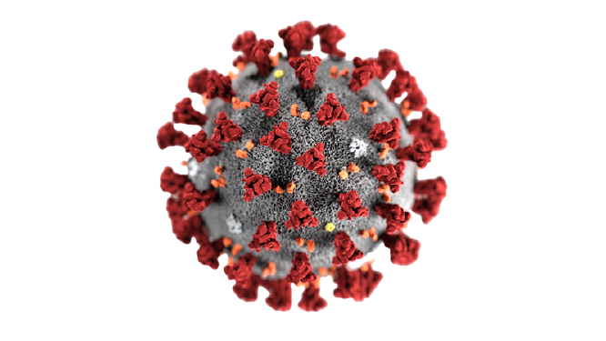

정확한 명칭은 SARS-Cov-2 바이러스로 사스 바이러스와 같은 RNA 바이러스이다.
현재 2019-2020에서 발병하고 있는 코로나 19의 병원체로 비말, 접촉으로 전파된다.

메르스 또는 중동호흡기중후군의 원인 병원체로 정확한 명칭은 메르스 코로나 바이러스이다.
신종 코로나 바이러스이다. 사우디아라비아 내 단봉낙타접촉에 의한 감염전파가 보고되어 있다.
신종플루, 독감의 A, B, C 모두 인플루엔자 바이러스의 종류로 생기는 독감의 종류이다.
현재 백신으로 예방 효과가 탁월하지만 꽤나 괴롭고 위험한 바이러스다.
중증급성호흡기증후군이라고도 하며, 2002년 중국에서 발병된 사스의 바이러스이다.
정확한 명칭은 SARS-CoV로 코로나 19와 같은 RNA 바이러스이다. 이 또한 비말과 접촉으로 전파된다.
정확한 명칭은 페스트균(Yersinia pestis)이다. 처음 전파는 감염된 쥐벼룩으로 인한 설치류의
감염으로 이를 접촉하게 되면서 인간에게 전염되었다.
동남아시아 지역에서 발생하는 동물매개 감염병의 병원체이다. 왕박쥐속과의 박쥐가
니파바이러스의 자연 숙주이다. 박쥐로 인한 노출, 사람 간의 전파가 가능하다. 구체적인 치료법이 없다고 한다.
인체면역결핍바이러스라고 하며, 우리가 알고 있는 에이즈는 HIV 감염 중 많이
진행된 면역결핍 상태의 HIV 감염을 얘기한다. 감염인의 모든 체엑에 존재한다.
단일가닥의 선상 RNA 바이러스라고 하며, 박쥐, 말 등에서 발견되었다고 한다. 독감과 비슷한 증상을 보인다.
1947 우간다 지카 숲에 사는 원숭이에게서 처음 발견되어 지카 바이러스라고
명명되었다고 한다. 모기의 흡혈과정을 통해 옮겨지는 감염병으로 신생아 소두증 등으로 특히 임산부들의 감염의 피해가
크다고 한다.
감염된 사람의 혈애그 분비물 등의 직접 접촉에서 전염된다. 정확한 기원은 없지만
박쥐가 유력한 숙주라고 한다. 치명적이지만 흐트러지기 쉬운 바이러스로 비누와 물만으로도
쉽게 죽일 수 있다.
감염된 진드기가 사람을 물어 감염되며 중증열성혈소판감소증후군이라 불리는 질병의 병원체이다.
이 바이러스를 갖고 있는 진드기는 0.5%밖에 되지 않기 때문에 치사율은 높지 않다고 한다.